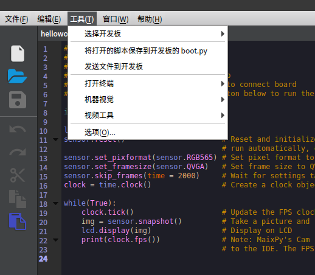

Upload script to development board
Earlier we came across the pye("filename.py") command to open an editor that directly edits files in the file system.
But slowly we will find that this method is only suitable for changing a small amount of code. When the amount of code is huge or we need to highlight support, it does not apply. We need to write the code on the computer and upload it to the board.
There are currently several methods:
1. Uploading scripts using the MaixPy IDE
Open the MaixPy IDE and connect to the development board.
Edit the file, then in the top Tools menu click Save opened file as boot.py to save the code to the development board's boot.py file. The next time the board is powered on, it will be automatically executed.
You can also use the Send file option in the Tools menu to send the file. It will be saved to the development board with the same name. This script can also upload other small files.

2. Uploading and running scripts using the graphical tool uPyLoader
uPyLoader is an open source software that allows you to easily connect to MaixPy and upload, download, and execute files, monitor output, and more.
Download the executable: release

Select the serial port and click the Connect button to connect the board
The first time you run the software you will need to initialize it. Click File -> Init transfer files to complete the initialization. This will create two files in the board, __upload.py and __download.py.
On the left side select the file you want to upload and click Transfer to upload it to the board's file system.
On the right side are the files inside the board, click List files to refresh the file list. To execute the script, simply select the file name and click on Execute.
Click on View -> Terminal above to open the terminal to view the runtime output or send a command
3. Using rshell tool
Just as widh the linux, use the cp on rshell to copy the file to the development board.
First, install rshell:
sudo apt-get install python3-pip
sudo pip3 install rshell
rshell -p /dev/ttyUSB1 # choose the device according to your serial port
Then copy file~
ls /flash
cp ./test.py /flash/ # copies the file "text.py" from the computer to the root directory of the development board
You can learn about other features of rshell in its project page.
4. Using the command line tool ampy
ampy is an open source, easy-to-use command line tool for uploading, downloading, and executing files.
Note that this tool is running on the computer, not on the board.
Use ampy --help to view help and information.
The ampy run file_in_PC.py command also allows you to run the script directly on the board without uploading it previously.
5. TF card copy
After copying it to the TF card, execute import filename in the terminal to run the script.